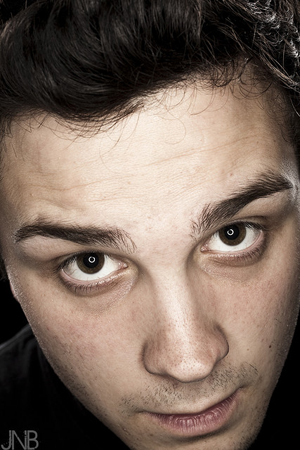

<div id="aboutholder">
<div id={{page.id}}>
	
  <h1>About</h1>
  <p>
      JNB Photography was founded by Jim Barnett in 2006 and has a fully equipped studio located in Summerland, CA which is where we do most of our shooting. We can do everything from green screen video shoots to small products. Jim Barnett recently had a photograph published in the New York Times and The Montecito Journal, you can find his photography in your local Barnes and Noble, Radioshack, Target and Amazon.com. We shoot everything from headshots for aspiring models/actors, products for companies, weddings, customer testimonial videos and we also specialize in motion graphic titling. If you need a title sequence done for a commercial, music video or independent film we can do that. Please check out our demo reels to see our motion graphic works. Please contact Jim Barnett for pricing, we realize these are hard times and are willing to work individual price packages for to work within peoples budgets. <br><br> - JNB Photo Video
  </p>
  <h1>Contact</h1>
  <p><a href="mailto:jim@jnbphotovideo.com">jim@jnbphotovideo.com</a></p>
</div>
</div>